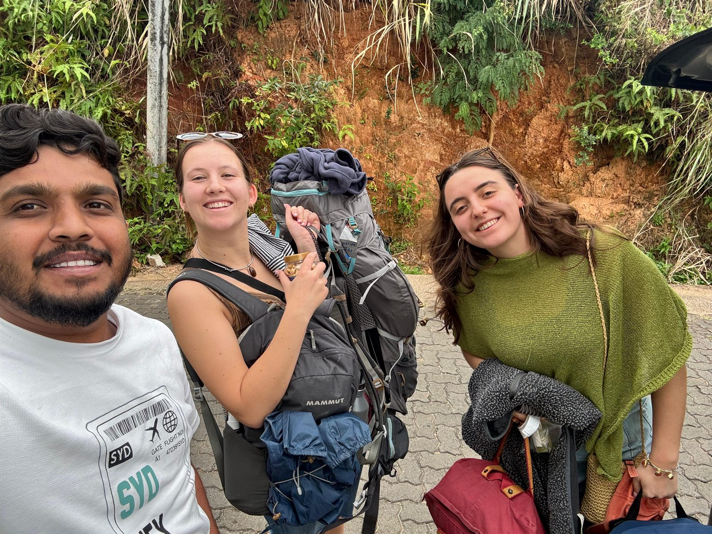

Seamless airport-to-hotel transportation. Arrive relaxed and ready for your Sri Lanka adventure.
Welcome to Sri Lanka! Start your tropical holiday the right way with our premium Sri Lanka airport transfers. We provide reliable, 24/7 transportation from Bandaranaike International Airport (CMB) in Colombo to any destination across the island. Avoid the stress of haggling with local taxis or waiting in long queues. Our professional, English-speaking private drivers ensure a smooth, comfortable, and safe journey to your hotel in modern, air-conditioned vehicles. Whether you are heading to the vibrant city of Colombo, the historical galle fort, the scenic hills of Kandy and Ella, or the pristine beaches of Mirissa, we've got your travel needs covered.


Hassle-free transportation from Bandaranaike International Airport (CMB) to your destination
Our polite and professional driver will be waiting for you at the airport arrival lobby, holding a personalized name board to warmly welcome you to Sri Lanka.
We will assist you with your luggage and, if needed, guide you to the safest places for local SIM cards and currency exchange within the airport before departure.
Travel in supreme comfort. Our vehicles are frequently maintained, fully air-conditioned, and spacious enough to accommodate solo travelers, couples, or large family groups.
Whether it's a short 45-minute drive to a Colombo hotel or a 4-hour scenic journey to the southern coast hubs like Galle, Mirissa, or Yala, we offer fixed-rate transfers to anywhere in Sri Lanka.
Your safety is our priority. All our private drivers are licensed, highly experienced in navigating Sri Lankan roads, and dedicated to offering you a smooth ride.
Flights arrive at all hours. Our airport taxi service operates around the clock, meaning we will be there to pick you up even if your flight lands at 2:00 AM.
Navigating a foreign country immediately after a long flight can be exhausting. Bandaranaike International Airport (CMB), the main international gateway located in Katunayake (about 30 km north of Colombo), is always bustling. While there are local airport taxis and tuk-tuks available, pre-booking your Sri Lanka airport transfer guarantees peace of mind. You won't have to negotiate prices in a currency you aren't familiar with, stand in long dispatch queues, or worry about whether the driver knows the location of your hotel. Our service ensures a fixed, transparent rate with no hidden charges. From the moment you step foot in the arrival hall, our representative will be there to guide you securely to your air-conditioned vehicle. Let your relaxing tropical holiday begin the moment you exit the terminal.
Our private taxi service covers every corner of Sri Lanka. Here are some of the most popular routes tourists take from the Colombo Airport:
We match the right vehicle to your specific needs, ensuring comfort regardless of your group size or
luggage requirements.
Luxury Cars & Sedans: Perfect for solo travelers or couples with standard luggage.
These comfortable, highly-maintained cars offer a smooth and private ride to any destination.
Minivans & SUVs: The ideal choice for families or small groups of 3 to 6 people.
Minivans offer extra legroom, high roofs, and ample space in the back for multiple large suitcases,
surfboards, strollers, or extra equipment.
Mini-Buses: For larger groups, corporate retreats, or multiple families traveling
together, our mini-buses (seating 10 to 15 passengers) provide a communal yet highly comfortable
travel experience, equipped with large windows for excellent sightseeing.
We actively monitor flight arrival times using your specific flight number. Whether you land early or experience a delay, our driver will adjust their arrival time accordingly and wait for you at no extra cost. Your pickup is guaranteed.
Our transfer rates are charged flat per vehicle, not per person. This makes our private taxi service highly economical and competitive, especially for families and small groups. All highway tolls, parking tickets, and airport entry fees are fully included in the quoted price.
Absolutely. The safety of your entire family is paramount. Please specify in the "Special Request" section of our booking form if you require a baby seat or toddler booster seat, and we will securely install one in the vehicle prior to your pickup.
Yes! You are booking a private transfer, which means you have the flexibility to request short stops. Our drivers speak English and will be happy to accommodate restroom breaks, quick snack stops, or even a brief pause for a photo opportunity along scenic routes.